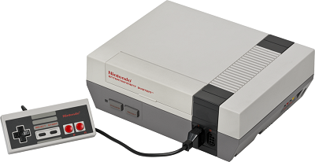
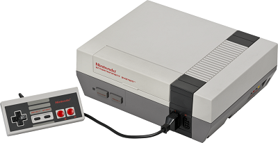

Nosotros
Esta página está dedicada a la moda y la cultura de la década de los ochenta, con análisis en las tendencias y sucesos que marcaron aquella afamada década.
¡Nos puede dar su feedback en el formulario de contacto en la parte inferior!
Vestimenta
Tecnología
Durante los años ochenta, una buena cantidad de avances tecnológicos se realizaron que beneficiaron, tanto de forma directa como indirecta, a los consumidores.
Las computadoras personales alcanzaron una primera ola de popularidad en esta época, con marcas como Apple, Tandy y Commodore sacando modelos a precios asequibles. Si bien estos se verían eclipsados posteriormente con la salida al mercado de la PC de IBM y sus clones, su irrupción en el mercado preparó el camino para la adopción de computadoras en los hogares alrededor del mundo.
Así mismo, el mercado de los videojuegos llegó a su auge a principios y a finales de la década: primero con las consolas de Atari, Mattel y Coleco, y otras empresas, cuya falta de control de calidad provocó una crisis en el mercado; y posteriormente con la NES de Nintendo, la cual mantuvo un monopolio casi completo de las ventas de videojuegos hasta principios de los años 90.
 

Paralelamente, por primera vez las personas pueden llevar la música consigo de una forma cómoda con el lanzamiento del Walkman en 1979. La facilidad de regrabar casettes permitió así mismo un control sin precedentes de las listas de reproducción.
Política
Los años 80's marcaron un hito en las relaciones exteriores, al presentarse un acercamiento sin precedentes entre los dos super poderes de la época: la Unión de Repúblicas Socialistas Soviéticas (URSS) y los Estados Unidos de América (EUA). En una guerra silenciosa para extender su influencia alrededor del globo desde la finalización de la Segunda Guerra Mundial (etapa conocida como la "Guerra Fría"), la llegada de Gorbachev al poder del gigante del Este supuso un vuelco importante hacia una relación pacífica entre los dos países.
Con el acercamiento a occidente, un aire de esperanza entró para una gran parte de la población más allá de la cortina de hierro. No obstante, la lentitud de la apertura económica y social abrió el camino para expresiones sociales subversivas al sistema comunista, las cuales culminaron en movilizaciones a favor de la libertad de los países del área de influencia soviética. La más famosa de ellas fue el derrumbe del "Muro de Berlín", una estructura que separaba a Berlín en dos partes: la primera, como capital de la República Federal Alemana de corte liberal, y la segunda, como capital de la República Democrática Alemana aliada con el sistema comunista.